— Chiba / Toke Station —
季節の食材でつくる自家製タパスとお酒。ふらっと寄れて、ゆっくり過ごせる夜を。
土気駅 徒歩1分 ／ 18:00–24:00 ／ 日曜定休
土気駅から歩いてすぐ。 その日の市場から選んだ食材で仕込む、自家製のタパスと気の利いたお酒。 仕事帰りの一杯にも、友人との食事にも、ひとりで過ごす夜にも。 格式ばらず、でも丁寧に。そんな夜を用意しています。
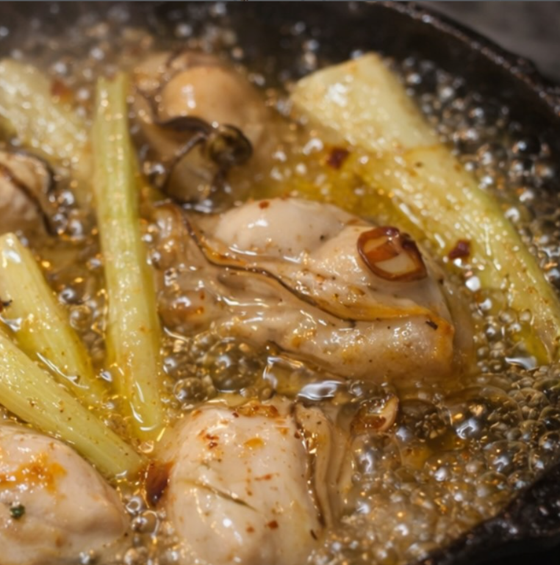
旬の牡蠣をオリーブオイルとにんにくで。パンと一緒にどうぞ。
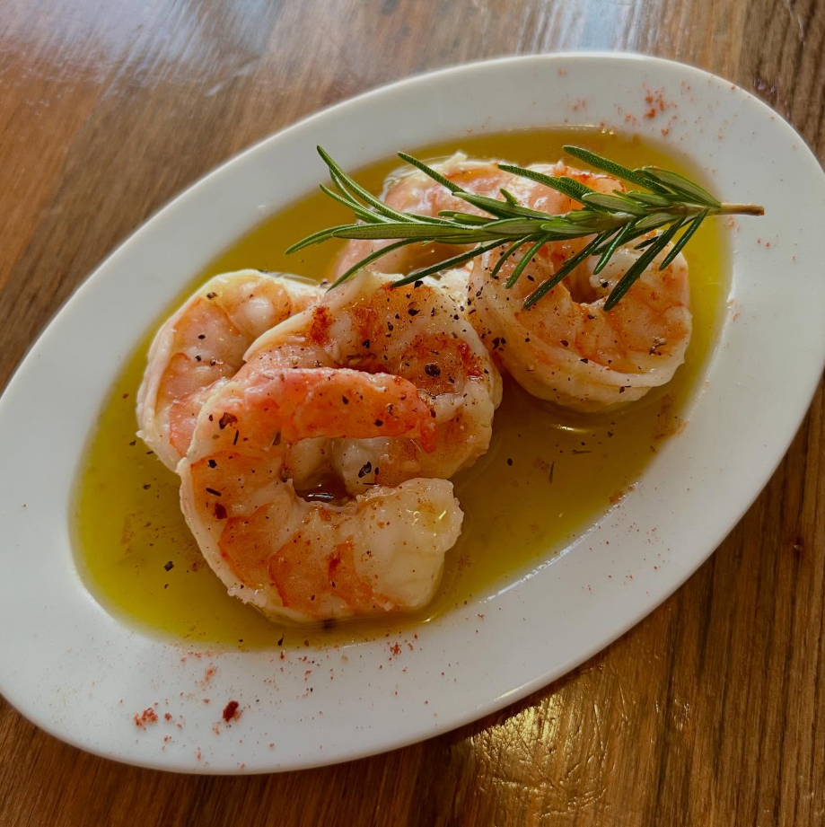
プリプリの海老をガーリックオイルでじっくりと。
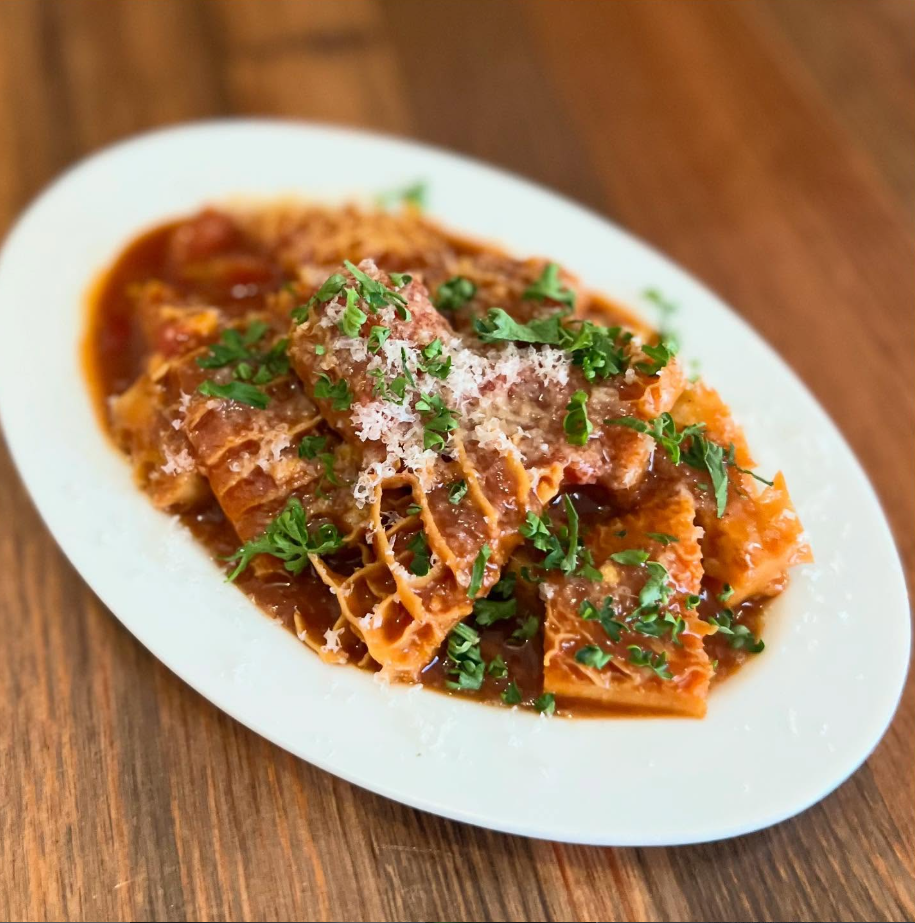
数時間煮込んだ肉のラグーソース。〆の一皿に。
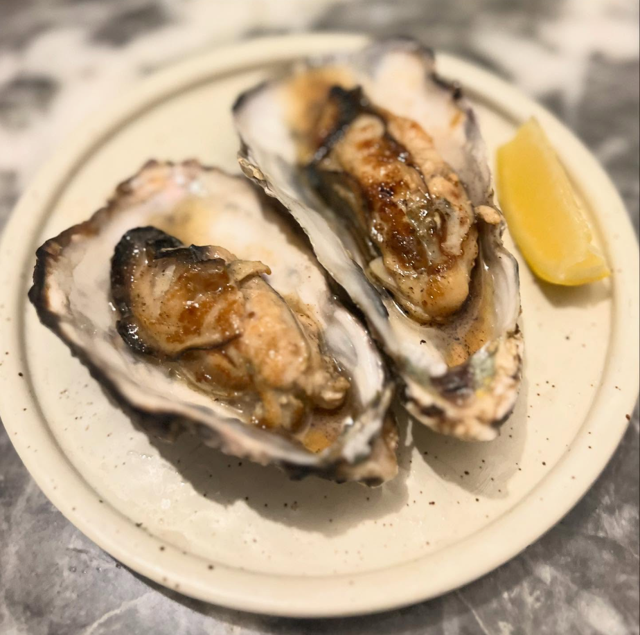
炭火で香ばしく焼き上げた、シンプルな一皿。
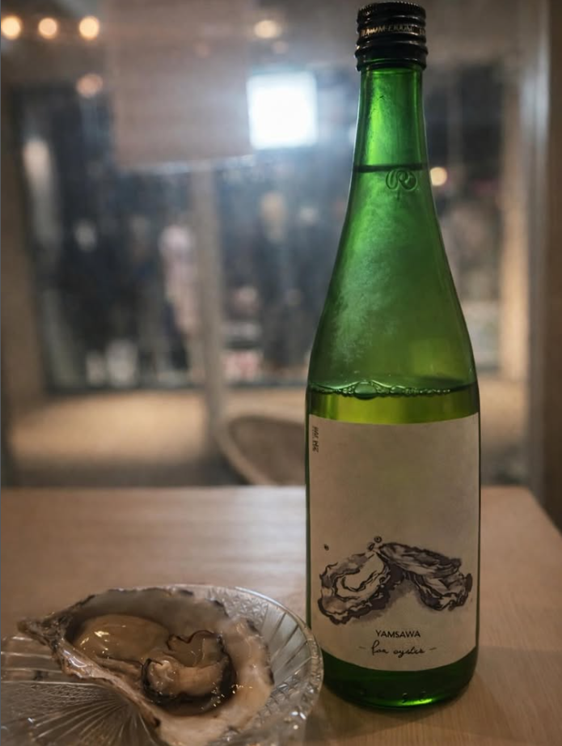
日本酒・ナチュラルワイン・クラフトビールなど、料理に合わせてご提案します。
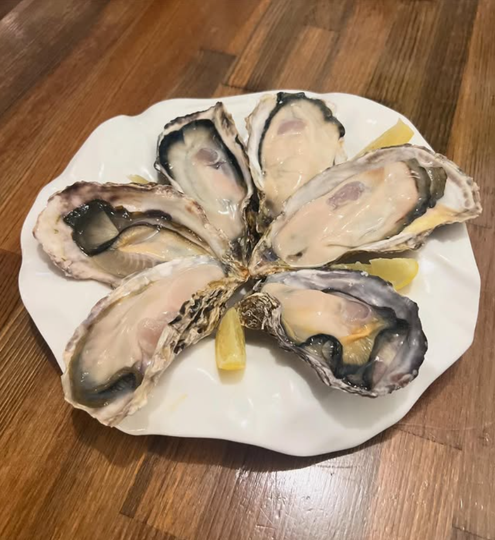
その日入荷した新鮮な生牡蠣を、シンプルに。
※ メニューは仕入れ状況により変わります
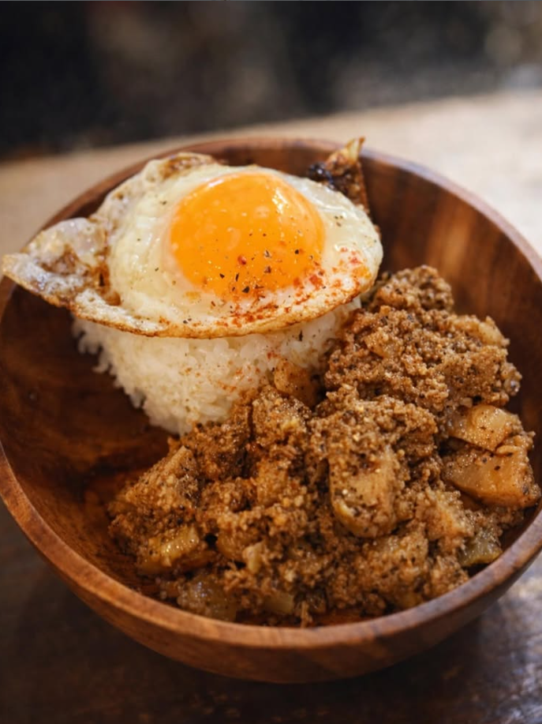
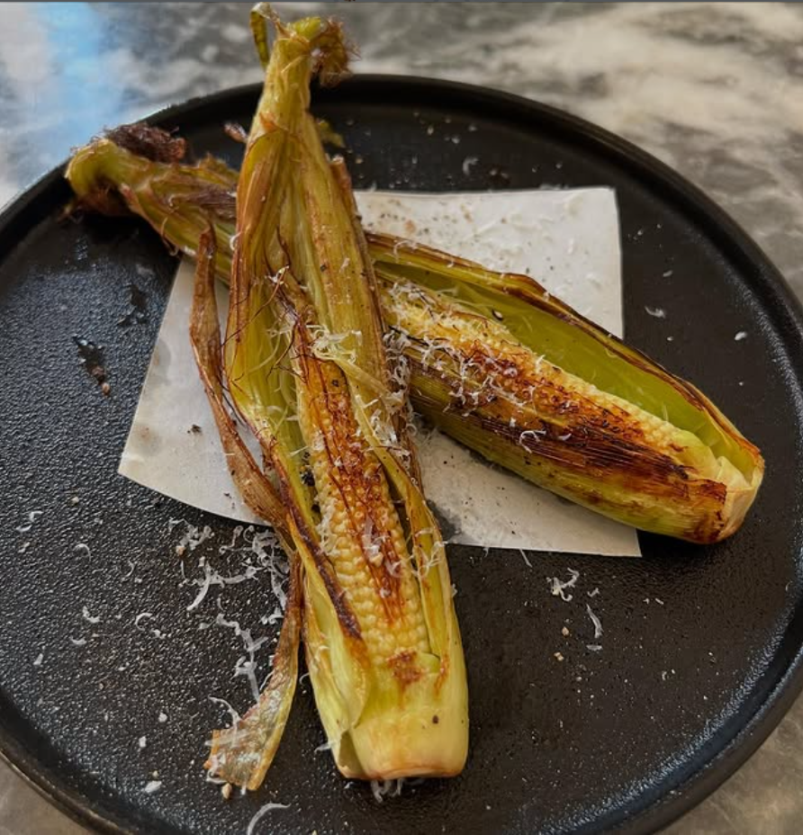
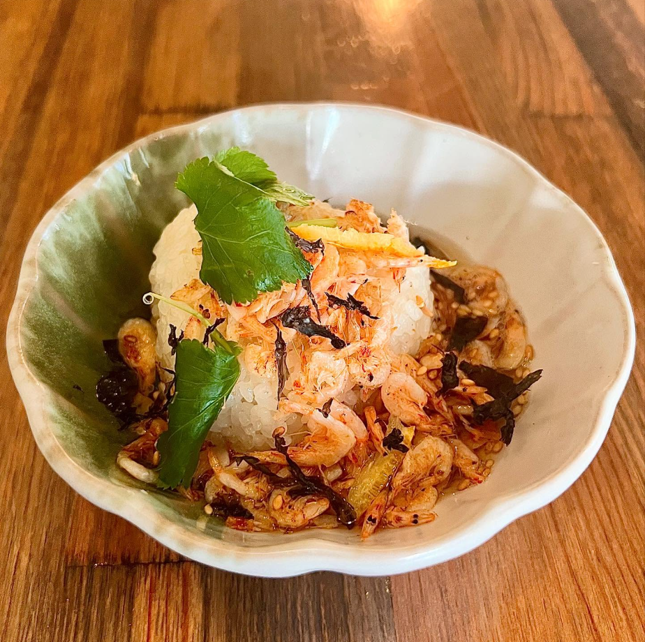
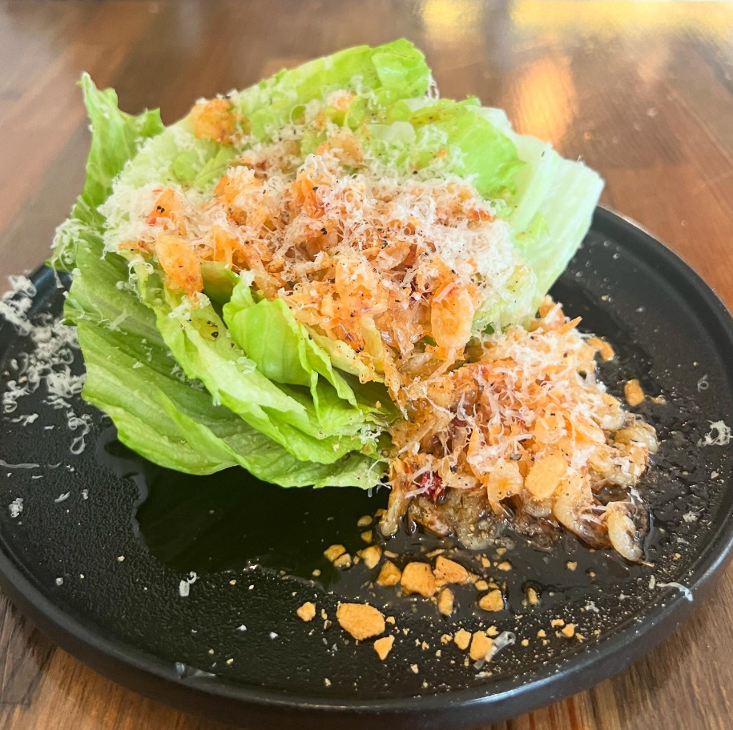
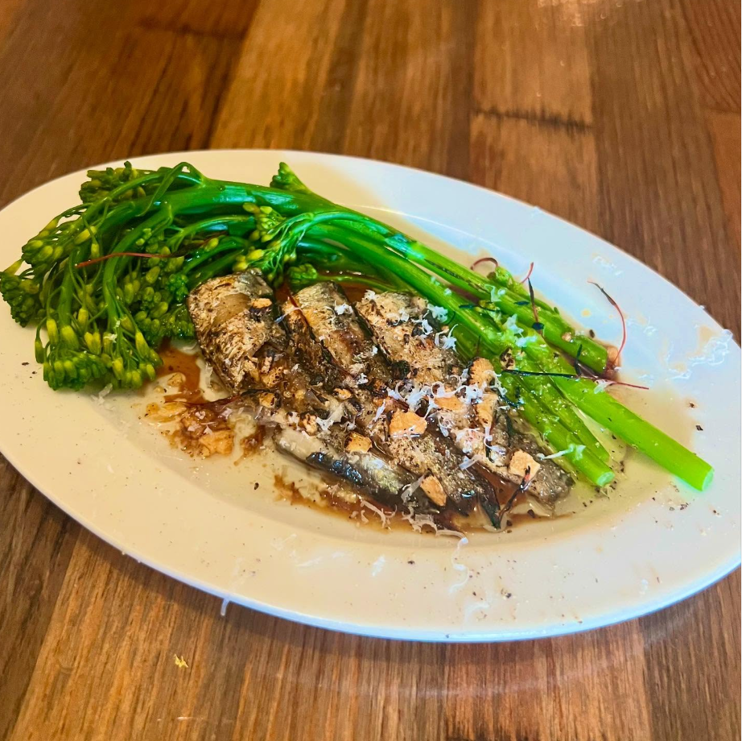
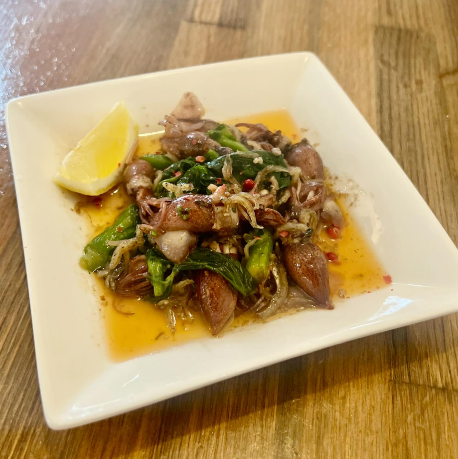